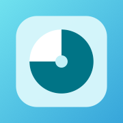
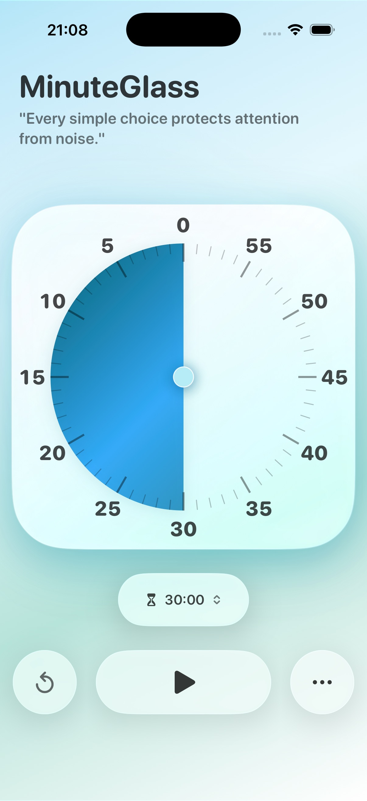
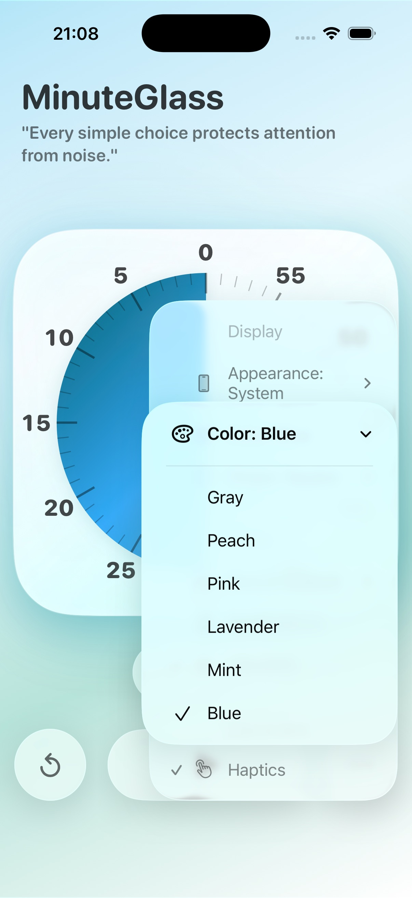
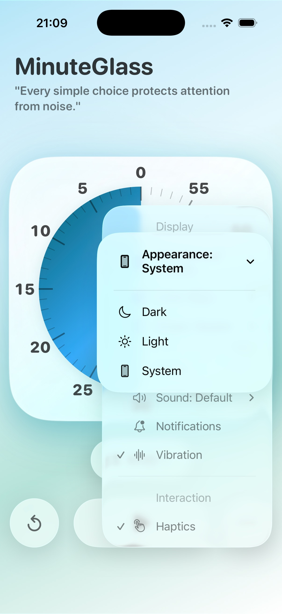
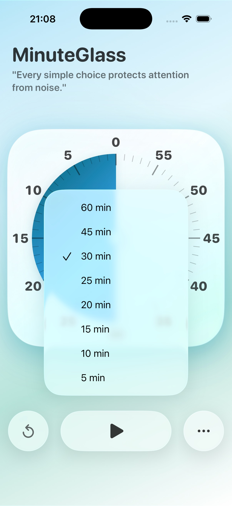

Touch-operated dial timer
Drag the large analog-style dial with your finger to set the timer visually, then start or pause from the same focused screen.

A clean iOS visual timer built around a touch-operated dial, soft theme colors, light and dark appearance, and quick duration presets.

MinuteGlass keeps the main experience focused on four controls: the dial, colors, appearance, and duration presets.
Drag the large analog-style dial with your finger to set the timer visually, then start or pause from the same focused screen.
Choose from soft color themes including Blue, Mint, Lavender, Pink, Peach, and Gray.
Follow the system appearance or choose Light or Dark mode directly from the app settings.
Start quickly from 5, 10, 15, 20, 25, 30, 45, or 60 minutes.
These screenshots come directly from the iOS Simulator and show the four features highlighted above.



